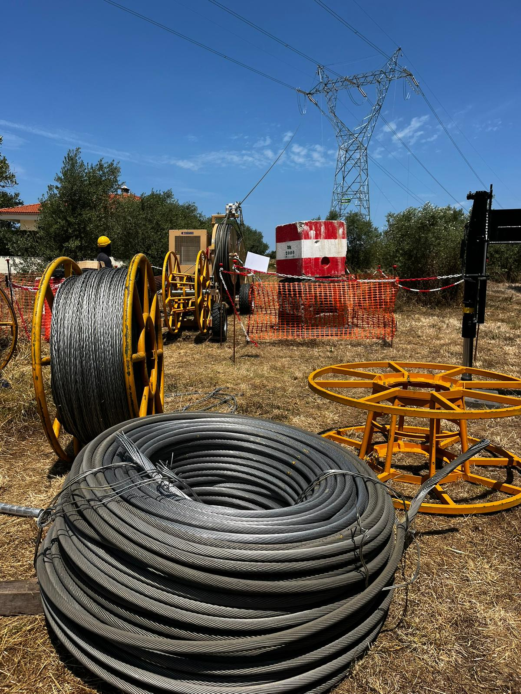
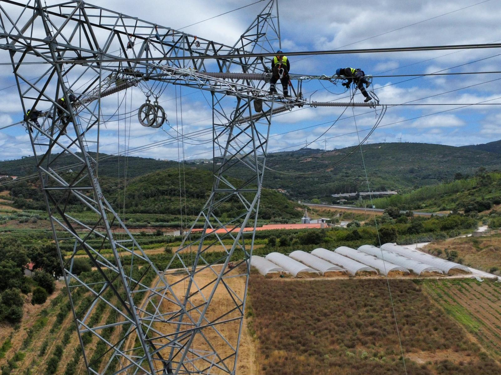
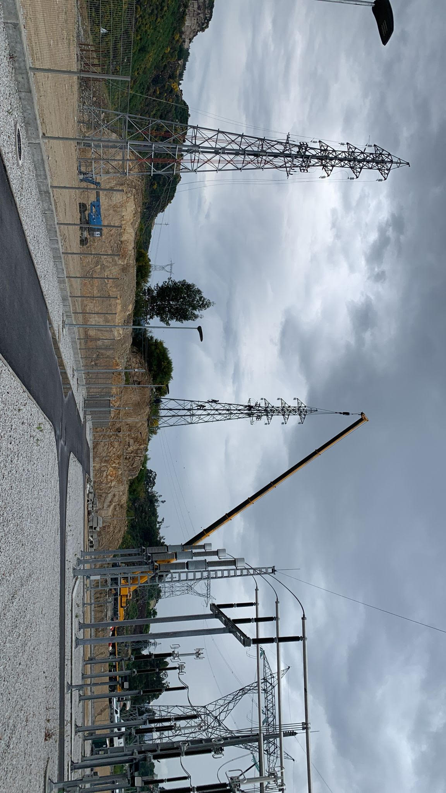
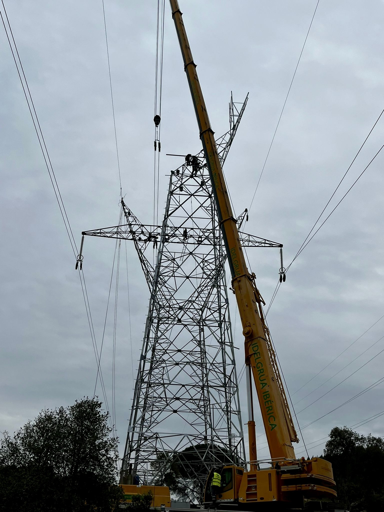
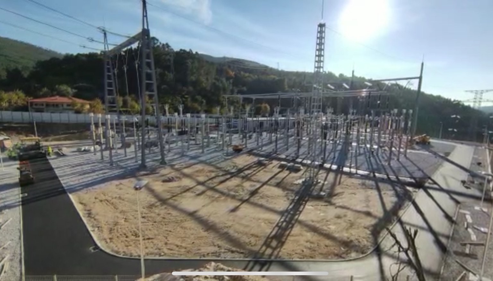
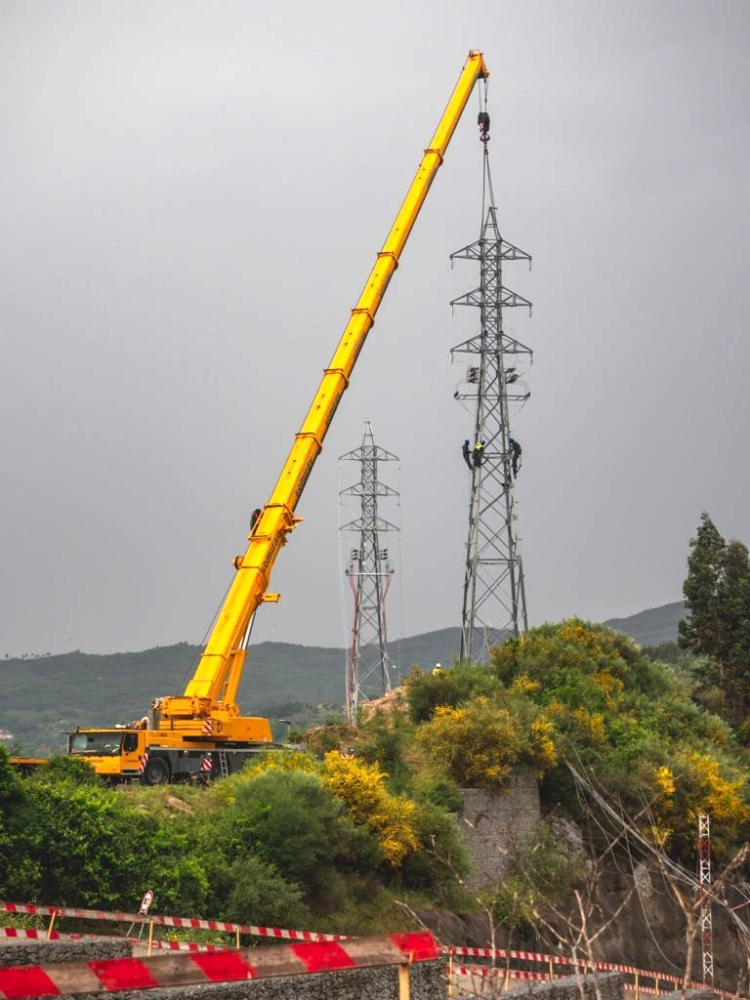

ES
España
Experiencia del equipo en líneas y subestaciones de 132 kV.
Los socios fundadores y miembros del equipo técnico de Constructora 2007 C.A. reúnen más de dos décadas de trayectoria profesional en proyectos de transmisión eléctrica desarrollados en Europa y Latinoamérica, bajo distintos requisitos técnicos, operativos y contractuales.
Experiencia del equipo en líneas y subestaciones de 132 kV.
Experiencia del equipo en subestaciones y líneas de 60 y 400 kV.
Experiencia del equipo en líneas y subestaciones de 69, 220 y 500 kV.
Experiencia del equipo en proyectos de transmisión y subestaciones de 115 y 230 kV.
Dirección de la construcción y de la fiscalización
Supervisión e inspección de obras
Construcción y montaje






La experiencia indicada corresponde a la trayectoria profesional adquirida por los socios fundadores y miembros del equipo técnico en proyectos desarrollados previamente para otras organizaciones. No representa contratos ejecutados directamente por Constructora 2007 C.A.